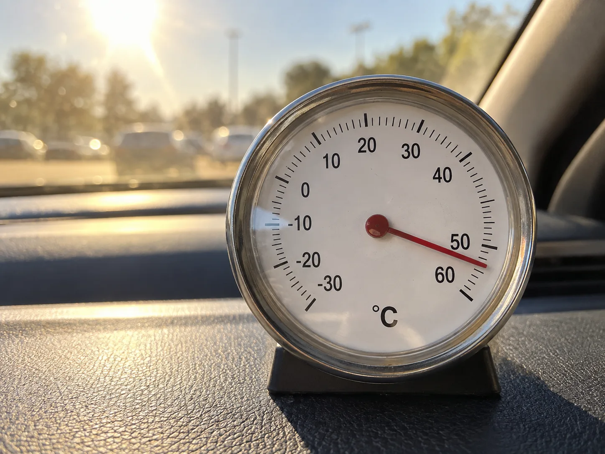
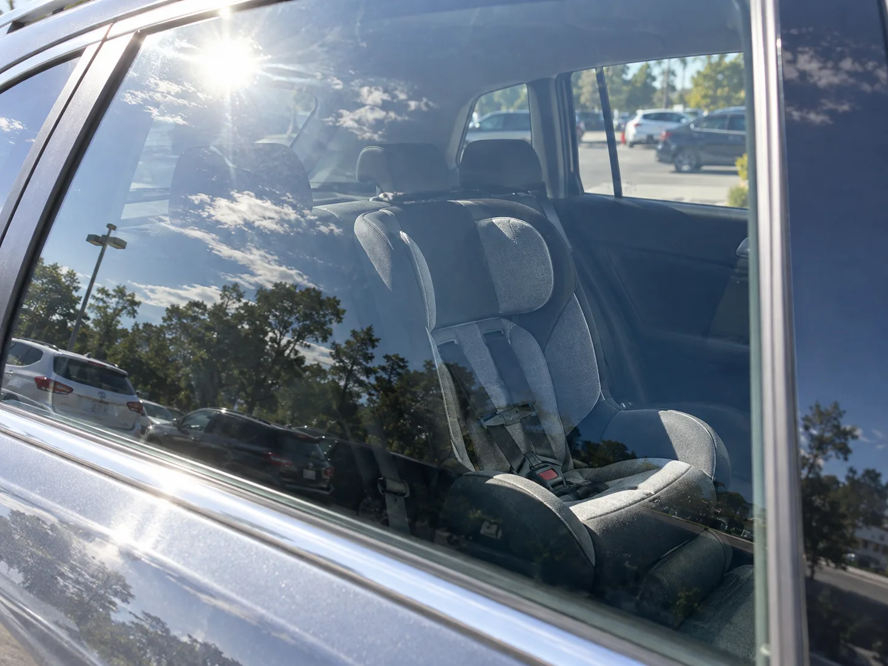
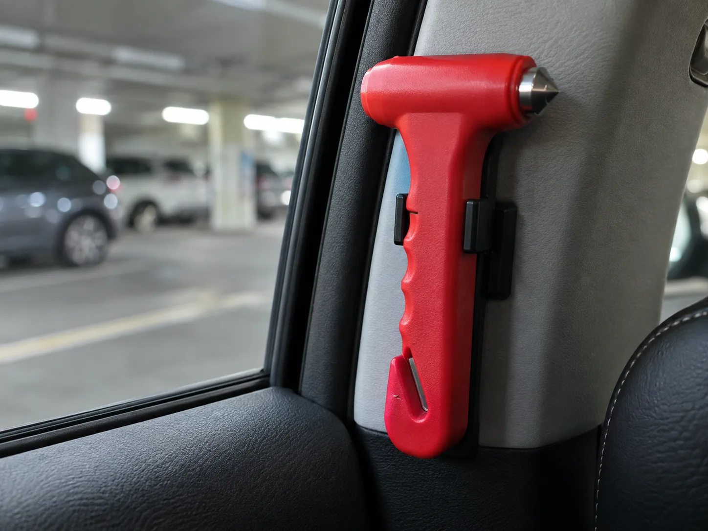

▲ 여름철 땡볕 아래 야외 주차장은 짧은 시간에도 차량 실내가 위험 수준까지 달아오른다 ⓒ CarPrism (AI 생성 이미지)
"마트에 잠깐 들렀다 올게. 5분이면 돼." 여름철 주차장에서 흔히 벌어지는 이 짧은 판단이, 실제로는 되돌릴 수 없는 사고로 이어질 수 있다.
차량 실내온도는 사람들의 예상보다 훨씬 빠르게 오른다. 창문을 살짝 열어두거나, 그늘에 주차했다고 해서 안전한 것도 아니다. 아동과 반려동물은 체온 조절 능력이 성인보다 떨어지기 때문에, 짧은 시간의 방치도 열사병으로 이어질 위험이 크다.
1. 차량 실내온도, 얼마나 빨리 오르나
여름철 주차된 차량의 실내온도 상승 속도는 일반적인 예상을 뛰어넘는다. 한국교통안전공단이 진행한 실험에 따르면, 외기온도가 35도 전후일 때 차량 실내온도는 30분 이내에 54도를 넘기고, 60분이 지나면 60도에 도달할 수 있는 것으로 나타났다. 4시간 이상 뙤약볕에 노출되면 앞유리 부근 실내온도는 92도까지, 조수석과 뒷좌석도 62도까지 치솟았다.
| 경과 시간 | 실내온도(대략) |
|---|---|
| 주차 직후 | 35도 안팎(외기온도 수준) |
| 30분 경과 | 54도 이상 |
| 60분 경과 | 60도 이상 |
| 4시간 이상 경과(앞유리 부근) | 92도까지 상승 |

▲ 땡볕에 주차된 차량의 대시보드 부근 온도는 실외 기온과 비교할 수 없을 만큼 빠르게 오른다 ⓒ CarPrism (AI 생성 이미지)
📍 그늘도, 창문 개방도 근본적 해결책은 아니다
실내 주차장에 세워둔 차량은 외기온도 35도 기준 2시간 동안 실내온도가 10도가량 오르는 데 그쳤지만, 땡볕에 노출된 차량은 같은 시간 70도까지 치솟을 수 있다. 창문을 몇 센티미터 열어두는 것도 실내 공기를 일부 순환시킬 뿐, 온도 상승 자체를 의미 있게 늦추지는 못한다. 한낮 차량 실내온도는 외부 온도의 2~3배까지 오를 수 있다는 점을 기억해야 한다.
2. 아이는 왜 훨씬 더 위험한가
아동은 성인보다 체온 조절 기능이 미성숙하다. 미국 도로교통안전국(NHTSA)에 따르면 아동의 체온은 성인보다 3~5배 빠르게 상승하는 것으로 알려져 있다. 실제로 밀폐된 차량은 단 10분 만에 실내온도가 10도 이상(화씨 기준 19도) 오를 수 있어, 어른이 "금방 다녀올게"라고 생각하는 그 짧은 시간에도 아이의 몸에는 큰 부담이 가해진다.
체온이 40도 안팎에 이르면 열사병(고체온증) 위험 구간에 진입하며, 심부 체온이 약 40도(화씨 104도)를 넘으면 열사병이 시작되고 41.7도(화씨 107도) 이상에서는 사망에 이를 수 있다는 것이 NHTSA의 설명이다. 미국에서는 지난 25년간 1,000명 넘는 아동이 차량 내 열사병으로 목숨을 잃었으며, 그중 상당수는 보호자가 의도적으로 방치한 경우가 아니라 깜빡 잊고 아이가 차에 있다는 사실을 인지하지 못한 경우였다.
✅ 국내에서도 반복된 방치 사고
· 2016년 광주에서는 4세 어린이가 통학버스에 약 8시간 동안 방치돼 폭염 속 의식불명에 빠지는 사고가 발생(이후 오랜 기간 의식을 회복하지 못함)
· 통학차량 안전기준을 강화한 '세림이법'은 이보다 앞선 2013년 청주 통학차량 사망사고를 계기로 2015년 시행됐으며, 이후에도 방치 사고가 반복되자 하차 확인 장치(일명 슬리핑 차일드 체크) 설치 의무화가 2019년 별도로 추가 시행됨
· 통학차량뿐 아니라 일반 가정 승용차에서도 보호자의 착각·깜빡함으로 인한 방치 사고가 매년 반복되고 있음
3. 반려동물도 예외가 아니다
반려동물은 사람보다 체온 조절 능력이 떨어진다. 개·고양이의 정상 체온은 39도 이하가 일반적이며, 체온이 40도 이상으로 오르면 열사병을 의심해야 한다. 열사병으로 인한 고열이 지속되면 장기 손상과 각종 합병증으로 이어져 심한 경우 사망에 이를 수 있다.

▲ 카시트가 비어 있어야 안전하다 — 잠깐이라도 아이나 반려동물만 남겨두고 자리를 뜨지 않는 것이 원칙이다 ⓒ CarPrism (AI 생성 이미지)
✅ 반려동물 열사병 의심 증상
· 과도한 헐떡임, 침 흘림, 구토, 무기력 증상이 나타나면 열사병을 의심
· 즉시 그늘지고 서늘한 곳으로 이동시키고 선풍기 바람을 쐬어주거나, 시원한 물에 적신 수건으로 몸을 감싸 체온을 낮춰야 함
· 증상이 있다면 응급처치 후에도 반드시 동물병원 진료를 받아야 함 — 겉보기에 회복된 듯해도 장기 손상이 남을 수 있음
4. 법적으로는 어떻게 다뤄지나
아동을 차량에 홀로 방치하는 행위는 아동학대(방임)로 다뤄질 수 있다. 보호자가 주정차된 차량에 아동을 남겨두고 자리를 비우는 것을 아동학대의 범위에 포함하도록 하는 방향의 법 개정 논의가 이어지고 있으며, 미국·캐나다 등 일부 국가에서는 정도에 따라 훨씬 무거운 범죄로 다뤄지는 경우도 있다.
반려동물의 경우도 마찬가지다. 동물을 정당한 사유 없이 고통이나 위험에 노출시키고 방치하는 행위는 동물학대에 해당할 수 있다. 현행 동물보호법상 동물을 유기하면 300만원 이하의 벌금에 처해지며, 학대로 동물을 죽음에 이르게 한 경우에는 3년 이하의 징역 또는 3천만원 이하의 벌금까지 가중될 수 있다. 차량 내 방치를 별도 규제 대상으로 명시해 처벌을 강화하자는 법 개정 논의도 국회에서 꾸준히 제기되고 있다.
아동복지법과 동물보호법 관련 법령 원문은 국가법령정보센터에서 확인할 수 있다. 아동복지법 바로가기
📍 "잠깐이니까 괜찮다"는 없다
많은 사고 사례에서 보호자는 "금방 다녀오려 했다"고 진술한다. 하지만 실내온도 상승 속도를 감안하면, 몇 분의 차이가 아이나 반려동물의 생명을 가르는 기준이 될 수 있다. 어떤 이유로도 아동·반려동물만 차량에 남겨두고 자리를 비우지 않는 것이 원칙이어야 한다.
5. 목격했다면 어떻게 대처해야 하나
차량 안에 아이나 반려동물이 홀로 있는 것을 발견했다면, 가장 먼저 상태를 확인해야 한다. 의식이 있고 큰 이상이 없어 보이더라도 방심은 금물이다.

▲ 차량에 비치된 비상탈출용 창문파괴기 — 생명이 급박한 상황에서 최후의 수단으로 쓰인다 ⓒ CarPrism (AI 생성 이미지)
✅ 목격 시 단계별 대응
· 1단계 — 주변에서 보호자를 찾는다: 근처 상점·시설에 방송을 요청하거나 큰 소리로 보호자를 찾음
· 2단계 — 즉시 112 또는 119에 신고: 아이·동물의 상태(의식, 호흡, 땀·헐떡임 여부)를 최대한 정확히 전달
· 3단계 — 의식이 없거나 상태가 위급하면 신고와 동시에 구조를 시도 — 문이 잠겨 있다면 비상용 창문파괴기 등으로 유리창을 깨는 것도 고려 대상
· 4단계 — 구조 후에는 그늘로 옮기고 몸을 식히며 구급대 도착을 기다림(직접 물을 끼얹는 것보다 시원한 수건, 선풍기 등이 안전)
📍 유리창을 깨면 재물손괴로 처벌받지 않을까
형법상 타인의 재물을 손괴하면 재물손괴죄(3년 이하 징역 또는 700만원 이하 벌금)가 성립할 수 있다. 하지만 생명이 위태로운 상황에서 이를 구하기 위한 부득이한 행위는 긴급피난으로 인정되어 위법성이 조각(면책)될 수 있다. 긴급피난이 인정되려면 다른 방법이 없었는지(필요성)와 지킨 이익(생명)이 침해한 이익(재산)보다 명백히 커야 한다는 점(이익균형성)이 함께 판단된다. 실제 미국 다수 주(州)에는 이런 상황에서 구조자를 법적으로 보호하는 '굿 사마리안'(선한 사마리아인)법이 별도로 마련돼 있으며, 국내에서도 상태가 위급해 보인다면 신고를 우선하되 구조를 미루지 않아야 한다는 것이 대체적인 시각이다. 다만 이는 최후의 수단이며, 가능하다면 112·119 상담을 통해 조치 여부를 안내받는 것이 안전하다.
6. 요약
여름철 주차된 차량의 실내온도는 예상보다 훨씬 빠르게 오른다. 외기온도 35도 기준으로 30분 만에 54도, 1시간이면 60도를 넘어설 수 있으며, 아동의 체온은 성인보다 3~5배 빠르게 상승한다. 그늘 주차나 창문을 살짝 열어두는 것만으로는 이 위험을 근본적으로 막을 수 없다.
아동을 차량에 방치하면 아동학대, 반려동물을 방치하면 동물보호법 위반으로 다뤄질 수 있다. "잠깐이면 괜찮겠지"라는 판단이 되돌릴 수 없는 결과로 이어진 사례가 국내외에서 반복돼 왔다.
차량 안에 홀로 남겨진 아이나 반려동물을 목격했다면 즉시 112·119에 신고하고, 상태가 위급하다면 구조를 미루지 말아야 한다. 생명이 걸린 상황에서 유리창을 깨는 행위는 긴급피난으로 면책될 가능성이 있다는 점도 기억해두면 좋다.